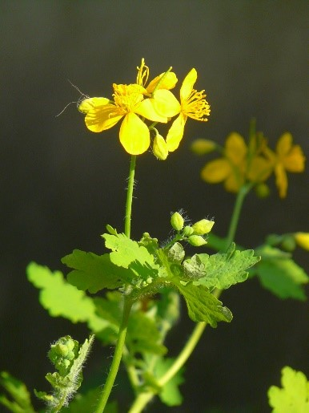

|

Многолетнее травянистое растение высотой 30-70 см с ветвящимся корневищем. Стебель редкоопушенный и прямостоячий,
в верхней половине ветвистый. Листья очередные, глубоко-перисто-раздельные с яйцевидными,
городчатыми или рассеченными, рассеянноопушенными долями. Нижние листья черешчатые, крупные, верхние мелкие, сидячие.
Ярко-желтые цветки одиночные или собраны в рыхлом зонтиковидном соцветии. Чашелистики в количестве двух одевают только бутончики,
после их раскрытия опадают. Цветет с мая до октября. Растет на свежих, богатых, гумусных, каменистых и глинистых почвах:
в пойменных лесах и кустарниках, по развалинам и сорным местам, в садах, вдоль стен, в парках и на пустырях.
Фотограф: Раду Кибзий |